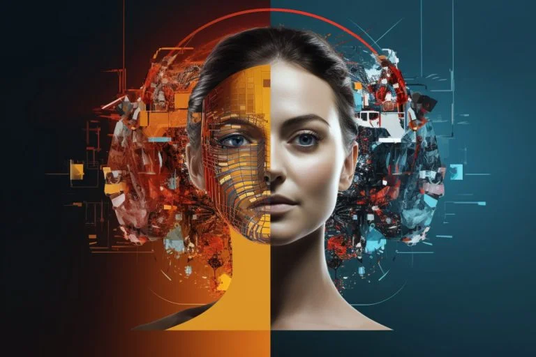

What is an Image Generator?
An image generator is a type of software or model designed to create images from various types of input. These generators use complex algorithms and machine learning techniques to produce images that can be realistic, artistic, or abstract, depending on the application and the model used.
Here how it works:
1. Training:
Data Collection: Gather a large and diverse dataset of images relevant to the task.
Preprocessing: Images are often resized and normalized to fit the model's requirements.
Learning: The model learns patterns, textures, and structures from the dataset. For example, in GANs, the generator improves its image creation ability by receiving feedback from the discriminator.
2. Generation:
Input: Depending on the model, the input can be random noise, a textual description, or a latent vector.
Processing: The model processes this input through its neural network layers to create an image.
Output: The generated image is produced based on the learned patterns and the input provided.
3. Post-Processing:
Refinement: Additional techniques may be used to enhance image quality, such as improving resolution or correcting color.